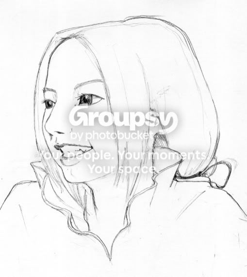

- - มังกรน้อย
ออริคู่แรกในชีวิต ยังอยู่ยืนยงมาถึงวันนี้ เกือบ5ปีแล้วสินะ :evil:


มันเผาแหละ :?
http://eco.froztic.in.th/archive/ecofanclub/
http://eco.froztic.in.th/archive/ecofanclub/viewtopic.php?f=21&t=1294
Yumi_Shinchi เขียน:ดีจ้าพี่น้อง เราเพิ่งหัดเล่นบอร์ดอ่ะ เห็นบอร์ดนี้น่าสนใจก็เลยอ่านดู ฝากเนื้อฝากตัวด้วยจ้า
ช่วยแนะนำวิธีฝึกวาดการ์ตูนหน่อยจิ เราก็พอมีพื้นฐานอยู่นิดหน่อย แต่มือไม่นิ่งอ่ะ
วาดไม่เป็นรูปซะที พอจะมีวิธีอะไรบ้างมั้ยอ่ะ ขอความกรุณาทีนะพี่น้อง


